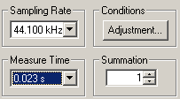

DSSF3 > RA > Impulse response > Measurement guide
Configuration of the measurement conditions
Basically, the measurement can be performed correctly by the default setting. Very clean impulse response can be obtained using a standard computer, soundcard, and microphones. Once you confirmed your PC works well, it is better to preserve the setting until the measurement ends. Impulse response measurement requires all the equipments to work well together. If you change the settings, it is difficult to reset them just before the measurement.
If you find difficulties, follow the instructions below.
The important settings in RA for the impulse response measurement are Sampling Rate, Measure Time, and Summation. It is briefly explained in the following.

Sampling Rate
Select as much high sampling rate as possible. RA works with up to the maximum sampling rate supported by the soundcard. But generally, 44 kHz or 48 kHz is enough.
Measure Time
To measure the impulse response correctly, measurement time should be set longer than twice of the reverberation time of a room. The longer the Measure Time is set, the more the Signal to Noise (S/N) ratio is improved.
Summation
Background noise has no regularity in time, so the summation does not increase its sound level, while the level of the impulse response is increased by the synchronized summation. Consequently, the S/N ratio is improved. When the summation is set to 2 or 4, the S/N ratio improves 3 or 6 dB, respectively. However, note that the total measurement time becomes long, when the larger number of summation is executed. If the obtained impulse response is noisy, we recommend trying TSP method rather than M-sequence (MLS).
DSSF3 > RA > Impulse response > Measurement guide